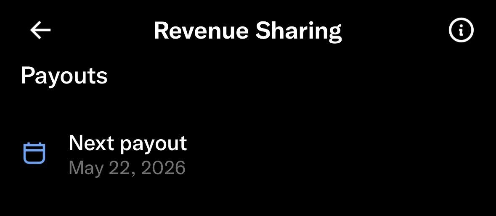

@CyberKanjousen Buy me a coffee 会从每一笔交易中提取出5%作为佣金，同时打赏的资金需要攒够10美元才可以申请提现
第一次申请提现时会进入一个月的审核阶段，之后每一次申请的提现都会在下一个星期的星期三发出，提现一次只能发出一笔，这就意味着你在申请提现后到下一个周三的这段时间里，你是不能申请新的提现的

サイバー環状線
@CyberKanjousen
5 月 23 日推特还不给環状線发工资的话環状線就只能用 bio 里面的 Buy Me A Coffee 地址赛博乞讨了。 https://t.co/N3jsQQnHhV